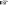

Elements
of
Programming Challenges
Basics
Volume 1
By
Chandra Shekhar Kumar
Co-Founder, Ancient Science Publishers
Founder, Ancient Kriya Yoga Mission
Integrated M. Sc. in Physics, IIT Kanpur, India
Ancient Science Publishers
Challenges
*
Challenge 1 Two Sum
-
✒ Solution. Let us assume that
-
 the same element cannot be used twice, i.e. the pair should consist of two different array elements.
-
the elements can be positive, negative or zero.
-
the array may contain duplicates.
-
there is only one such pair if at all.
-
1.1 Brute Force
We can try all the pairs in the array and see if any of these add up to the number  .
.
bool hasPairSum(const std::vector<int> & arr, int k)
{
std::size_t len = arr.size();
for(int i = 0; i < len; i++)
{
for(int j = i + 1; j < len; j++)
{
if (arr[i] + arr[j] == k)
return true;
}
}
return false;
}
Since there are  possible pairs, time complexity of this approach is
possible pairs, time complexity of this approach is  . Space complexity is
. Space complexity is  .
.
1.2 Sort and Binary Search
We can sort the array and search for the pair by traversing the array element-wise and look ahead for its complement using binary search.
bool hasPairSum(std::vector<int> & arr, int k)
{
std::sort(arr.begin(), arr.end());
std::size_t len = arr.size();
for(int i = 0; i < len; i++)
{
if(std::binary_search(arr.begin() + i, arr.end(), k - arr[i]))
return true;
}
return false;
}
Time complexity of  binary searches is
binary searches is  . Time complexity of sorting process depends on the sorting algorithm : in case of Merge Sort or Heap Sort. in case of Quick Sort.
. Time complexity of sorting process depends on the sorting algorithm : in case of Merge Sort or Heap Sort. in case of Quick Sort.
Space complexity for binary searches is  . Space complexity is for Merge Sort, for Heap Sort and
. Space complexity is for Merge Sort, for Heap Sort and  for Quick Sort. Hence overall space complexity is . 1
for Quick Sort. Hence overall space complexity is . 1
1.3 Sort and Traverse Inward
After sorting the array, we can search for the pair-sum by comparing with the sum of the elements at the extreme ends. If it exceeds , then there is no point in looking ahead because all the entries ahead will yield higher sums only, hence we move backward by decrementing the right index. If it is less than , then any sum using the lower element will yield smaller sums only, hence we move forward by advancing the left index.
bool hasPairSum(std::vector<int> & arr, int k)
{
std::sort(arr.begin(), arr.end());
std::size_t low = 0, high = arr.size() - 1;
while (low < high)
{
int sum = arr[low] + arr[high];
if(sum == k)
return true;
else if(sum > k)
high--;
else // sum < k
low++;
}
return false;
}
Space-Time complexity of this algorithm is dominated by the sorting algorithm. Time complexity of the process of traversing inwards is and space complexity is . ∎